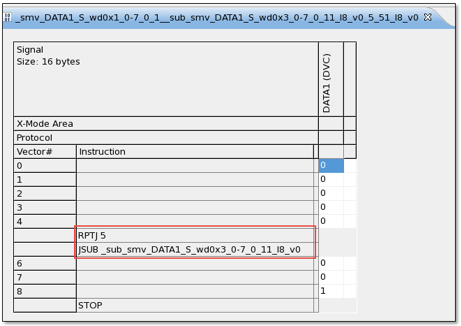

repeatSub()
This function cooperates with insertSub() to repeat subroutine calls using
the RPTJ instruction. It must be used together with
insertSub().
Syntax
repeatSub(int repeatNum);
Parameter |
Description |
|---|---|
repeatNum |
number of repeated subroutine calls. |
Return value
There is no return value.
Example
RDI_BEGIN();
rdi.smartVec(). pin("DATA1").writeData(0x1,8,0) // the content in the main pattern
.insertSub(5).repeatSub(5).pin("DATA1").writeData(0x3,8,0).execute(); // the content in sublabel 1, RPTJ 5, which is inserted in the main pattern
RDI_END();With the above code, you add the target subroutine at the vector 5 for five times, as the figure below shows.

Functional changes
- Introduced in SmartRDI 2.4.4